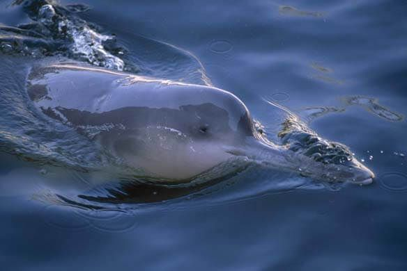

également connu sous le nom de dauphin du Yangtsé, ce dauphin d'eau douce était autrefois commun dans le fleuve Yangtsé en Chine. Malheureusement, il a été déclaré éteint en 2006, en grande partie en raison de la pollution et de la perte d'habitat.
